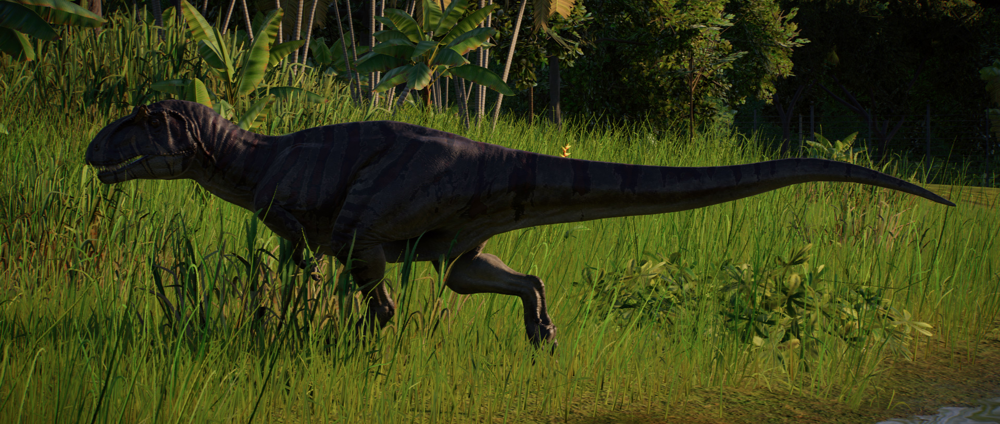

O Metriacantossauro é um gênero de terópode carnívoro que existiu durante o período Jurássico Superior. Nomeado por causa dos espinhos em suas vértebras (o nome se traduz como “lagarto moderadamente espinhoso”), ele pode crescer até 8 m de comprimento e pesar mais de uma tonelada e ataca grandes herbívoros. Apesar de seu tamanho relativamente grande, o Metriacantossauro pode atingir velocidades de até 32 km/h.